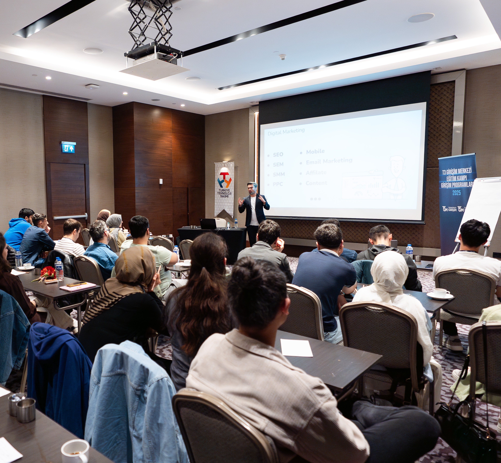
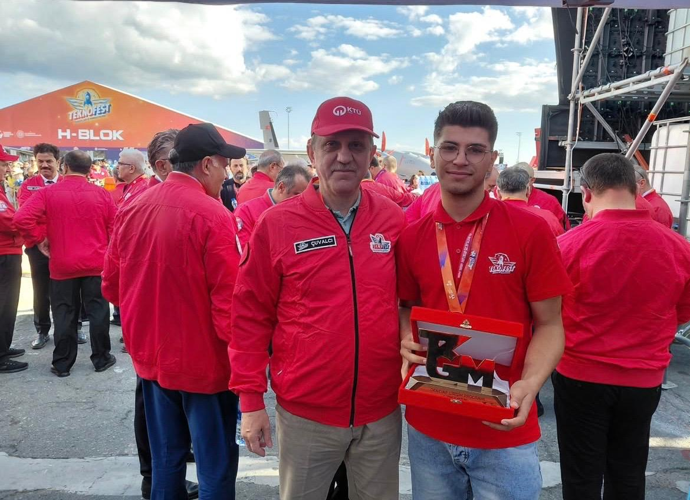

Başarılar
TARSUS – Eğitim Kampı
Akıllı tarım odaklı TARSUS projesi kapsamında katıldığımız eğitim kampı.



Teknofest 2025 – Demo Day
MVP’nin jüri ve yatırımcılara sunulduğu Demo Day etkinliği.


Ödül Töreni
Projenin yenilikçi yaklaşımı sayesinde ödül alınması.
